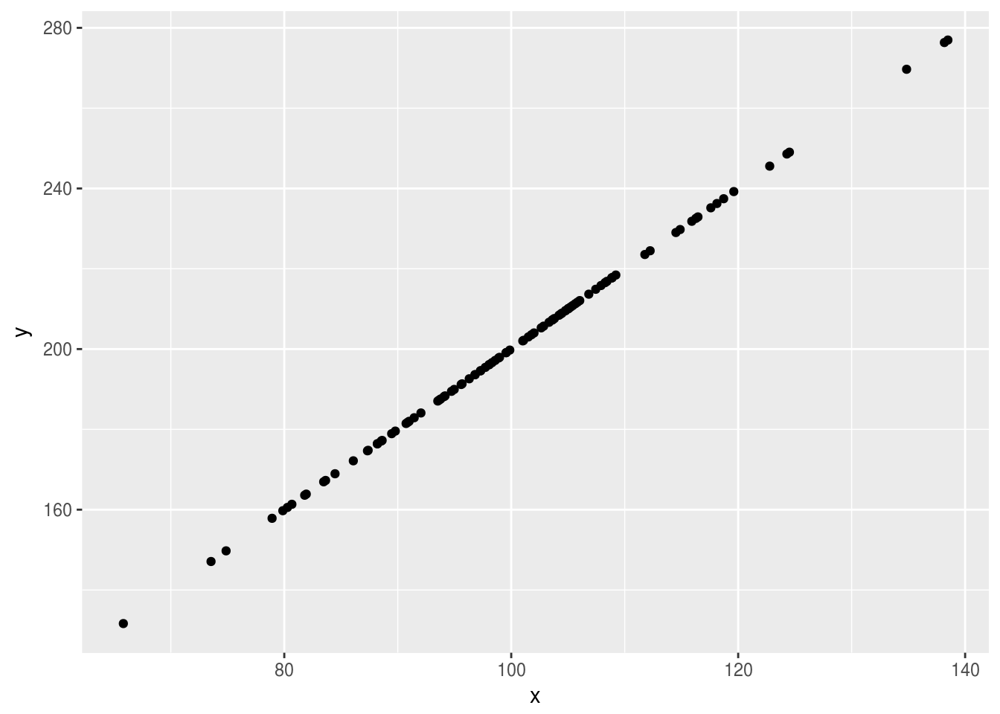

The flexibility of the stan modelling language makes it an attractive option for simulating data, whether to be used in a simulation study or for other uses. In order to use data simulated from stan as input to a stan model it needs to be reshaped and properly configured, the rstansim function simulate_data() is designed to make this process as simple as possibe.
The simulate_data() function takes a stan model and a set of further arguments and generates datasets according to the stan model, in a format where they are ready to be fed back in as input data for another stan model. By default the function has two effects; firstly it saves the simulated datasets as .rds files in a specified directory, and secondly it returns an object with S3 class stansim_data. This object stores summary information on the simulated datasets and can be fed directly to the fit_models() function to fit a stan model to all datasets.
The main argument is the stan model from which data is to be simulated. This can be specified either as an object in R, or by specifying a file location ending in “.stan”. Any valid stan model is acceptable for this argument, but there are a few factors to consider in specifying it:
nsim argument. So when specifying the stan model only consider how you wish a single dataset to look.This is a descriptive name to help identify the simulated data. It will be used as the stem_name for simulated datasets (e.g. data_name = "correlated multi-regression" would be saved as uncorrelated multi-regression_1.rds) which will in turn be saved into any simulation objects, so it is highly recomended that an informative value is set. If none is provided it will simply deafult to the sys.time when ran.
As stated above, any data arguments in the stan model need to have valid values sepecified for them, whether or not they are relevant to the data to be simulated. These should be provided in the typical rstan form, as a named list.
A named list as with input_data, this specifies the values of all fixed parameters in the simulation model. If any parameters aren’t specified here there value will be randomly assigned, as this is rarely likely to be a desired behaviour it is recommended that all parameters have their values specified through this argument.
The main arguments for the function are covered above, further detail can be found in the simulate_data() function documentation.
Below is a very simple example, simulating 10 datasets with 2 perfectly correlated variables, x and y, where y is double of x. First off, the stan model is defined.
// saved as basic_sim.stan
parameters {
real scale;
}
generated quantities {
vector[100] x;
vector[100] y;
for(i in 1:100) x[i] = normal_rng(100, 15);
for(i in 1:100) y[i] = scale * x[i];
}This file is then fed to the simulate_data() function.
library(rstansim)
small_simulation <- simulate_data(
file = "basic_sim.stan",
param_values = list("scale" = 2),
vars = c("x", "y"),
data_name = "small_sim_example",
nsim = 10,
path = "sim_data/"
)We can check the data now.
# is the data saved?
dir("sim_data")
## [1] "small_sim_example_10.rds" "small_sim_example_1.rds"
## [3] "small_sim_example_2.rds" "small_sim_example_3.rds"
## [5] "small_sim_example_4.rds" "small_sim_example_5.rds"
## [7] "small_sim_example_6.rds" "small_sim_example_7.rds"
## [9] "small_sim_example_8.rds" "small_sim_example_9.rds"
# is the data of the correct format?
example_data <- readRDS("sim_data/small_sim_example_1.rds")
str(example_data)
## List of 2
## $ x: num [1:100(1d)] 101 89.7 66.5 86 78 ...
## $ y: num [1:100(1d)] 202 179 133 172 156 ...
library(ggplot2)
ggplot(as.data.frame(example_data), aes(x = x, y = y)) +
geom_point()